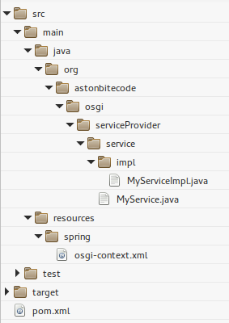
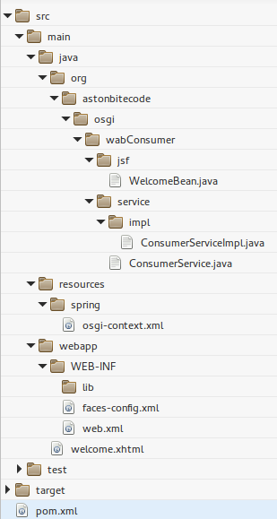
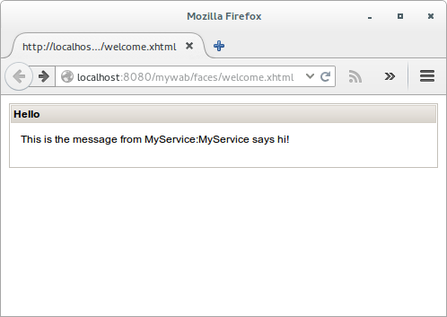

Note: You may find the complete source code for this tutorial here.
Combining the modularity offered by OSGi with the EE technologies may result to powerful, scalable and maintainable applications.
Eclipse Virgo bridges OSGi and JEE worlds and provides a “completely module-based Java application server”.
Even if the Virgo documentation provides detailed explanations, it seemed difficult to find tutorials that are functional and build up to a JEE Web application that is powered by OSGi bundles and services.
In this tutorial, I will try to provide the pieces to build a JSF – Richfaces – Spring application that makes use of OSGi services over Blueprint.
It is considered that the reader has the knowledge of Maven, OSGi, Spring and JSF.
I used the eclipse IDE but any IDE (or no IDE) should do.
We will create two bundles. The first is a simple OSGi bundle that provides a service to the framework and the second is a WAB, that consumes the service and forms a JSF web application.
Service Provider bundle
Create a simple maven project and inside it the interface for the service that will be exported:
package org.astonbitecode.osgi.serviceProvider.service;
public interface MyService {
public String getName();
}
Then, the MyService implementation:
package org.astonbitecode.osgi.serviceProvider.service.impl;
import org.astonbitecode.osgi.serviceProvider.service.MyService;
public class MyServiceImpl implements MyService {
@Override
public String getName() {
return "MyService says hi!";
}
}
In order to create the OSGi service and export it with Blueprint, Gemini expects by default to find the file “osgi-context.xml” under the folder META-INF/spring, but this can change. I have chosen to put our file inside the resources folder, under a subfolder called “spring” (you may see the structure of the whole project later on).
The contents of the osgi-context.xml file should be:
<?xml version="1.0" encoding="UTF-8"?>
<blueprint xmlns="http://www.osgi.org/xmlns/blueprint/v1.0.0">
<bean id="myService" class="org.astonbitecode.osgi.serviceProvider.service.impl.MyServiceImpl" />
<service ref="myService" interface="org.astonbitecode.osgi.serviceProvider.service.MyService" />
</blueprint>
The “bean” element creates the Spring Bean by instantiating the MyServiceImpl, whereas the “service” element exports the “myService” Spring Bean as an OSGi service.
After these, the structure of the project should look like the following:

We will use maven and the maven-bundle-plugin in order to build our bundle. In order to do this, our pom.xml should contain the following plugin configuration:
<plugin>
<groupid>org.apache.felix</groupid>
<artifactid>maven-bundle-plugin</artifactid>
<version>2.4.0</version>
<extensions>true</extensions>
<executions>
<execution>
<id>bundle-manifest</id>
<phase>process-classes</phase>
<goals>
<goal>manifest</goal>
</goals>
</execution>
</executions>
<configuration>
<instructions>
<bundle-classpath>.</bundle-classpath>
<bundle-symbolicname>${project.artifactId}</bundle-symbolicname>
<spring-context>spring/osgi-context.xml;create-asynchrously:=true;wait-for-dependencies:=true;publish-context:=true</spring-context>
<export-package>org.astonbitecode.osgi.serviceProvider.service</export-package>
<import-package>!org.astonbitecode.osgi.serviceProvider.*, *</import-package>
</instructions>
</configuration>
</plugin>
Using the maven-bundle-plugin, we define the export and import packages for the bundle and the location of the osgi-context xml
After running mvn install, our bundle should contain the following MANIFEST.MF:
Manifest-Version: 1.0
Bnd-LastModified: 1394373967669
Build-Jdk: 1.7.0_51
Built-By: astonbitecode
Bundle-ManifestVersion: 2
Bundle-Name: serviceProvider
Bundle-SymbolicName: serviceProvider
Bundle-Version: 0.0.1.SNAPSHOT
Created-By: Apache Maven Bundle Plugin
Export-Package: org.astonbitecode.osgi.serviceProvider.service;version=" 0.0.1.SNAPSHOT"
Spring-Context: spring/osgi-context.xml;create-asynchrously:=true;wait-f or-dependencies:=true;publish-context:=true
Tool: Bnd-2.1.0.20130426-122213
WAB - Service Consumer
We got the producer of the service done, so we should now continue with the bundle that will make use of the service and will contain the JSF and Richfaces implementation.
Our bundle this time should follow the EE way and its structure will be quite different from the serviceProvider.
Since we are dealing with a Dynamic Web project, let’s see how some of the contents of the web.xml should be.
The crucial elements regarding the OSGi and blueprint are the following:
<context-param>
<param-name>contextConfigLocation</param-name>
<param-value>classpath:spring/*context.xml</param-value>
</context-param>
<listener>
<listener-class>
org.springframework.web.context.ContextLoaderListener
</listener-class>
</listener>
<context-param>
<param-name>contextClass</param-name>
<param-value>
org.eclipse.virgo.web.dm.ServerOsgiBundleXmlWebApplicationContext
</param-value>
</context-param>
The first (contextConfigLocation) defines where the Spring configuration files are located. As in the serviceProvider bundle, we choose to keep the configurations under the resources folder and under the spring sub-folder.
The second element, defines a Spring context loader listener that will load the root web application context.
Finally, the third element enables the use of the OSGi services within the root WebApplicationContext.
The rest of the web.xml contains the usual elements to create a JSF and Richfaces application, the most important being:
<servlet>
<servlet-name>Resource Servlet</servlet-name>
<servlet-class>org.richfaces.webapp.ResourceServlet</servlet-class>
<load-on-startup>1</load-on-startup>
</servlet>
<servlet-mapping>
<servlet-name>Resource Servlet</servlet-name>
<url-pattern>/org.richfaces.resources/*</url-pattern>
</servlet-mapping>
<servlet>
<servlet-name>Faces Servlet</servlet-name>
<servlet-class>javax.faces.webapp.FacesServlet</servlet-class>
<load-on-startup>1</load-on-startup>
</servlet>
<context-param>
<param-name>facelets.VIEW_MAPPINGS</param-name>
<param-value>*.xhtml</param-value>
</context-param>
<servlet-mapping>
<servlet-name>Faces Servlet</servlet-name>
<url-pattern>/faces/*</url-pattern>
</servlet-mapping>
Several libraries are needed by our project in order to use JSF and Richfaces. We decided to install the JSF as a bundle in the OSGi framework and to embed the Richfaces inside our bundle. The most correct thing to do in an OSGi environment is to have all the needed libraries installed as bundles and use their exported packages in our code. This ensures modularity and at the end of the day will provide great help during code upgrades etc. However, it can be a design decision to keep some library embedded into a bundle. The maven-bundle-plugin offers this choice, using the Embed-Dependency and Embed-Transitive elements. We will use this to embed the Richfaces into our WAB – Service consumer.
The complete pom.xml that achieves the above can be found along with the rest of the source code. However, we will show here the configuration of the maven-bundle-plugin:
<plugin>
<groupId>org.apache.felix</groupId>
<artifactId>maven-bundle-plugin</artifactId>
<version>2.4.0</version>
<extensions>true</extensions>
<executions>
<execution>
<id>bundle-manifest</id>
<phase>process-classes</phase>
<goals>
<goal>manifest</goal>
</goals>
</execution>
</executions>
<configuration>
<supportedProjectTypes>
<supportedProjectType>bundle</supportedProjectType>
<supportedProjectType>war</supportedProjectType>
</supportedProjectTypes>
<instructions>
<Bundle-SymbolicName>${project.artifactId}</Bundle-SymbolicName>
<Bundle-ClassPath>.,WEB-INF/classes</Bundle-ClassPath>
<Import-Package>
com.opensymphony.oscache.base;resolution:=optional, com.opensymphony.oscache.general;resolution:=optional,
com.opensymphony.oscache.web.filter;resolution:=optional, com.sun.enterprise;resolution:=optional,
com.sun.enterprise.deployment;resolution:=optional, groovy.lang;resolution:=optional, groovy.util;resolution:=optional,
javax.annotation, javax.crypto, javax.crypto.spec, javax.el,javax.enterprise.context;resolution:=optional,
javax.enterprise.context.spi;resolution:=optional,javax.enterprise.event;resolution:=optional,
javax.enterprise.inject;resolution:=optional,javax.enterprise.inject.spi;resolution:=optional,
javax.imageio;resolution:=optional,javax.imageio.metadata;resolution:=optional,
javax.imageio.stream;resolution:=optional, javax.inject;resolution:=optional, javax.jms;resolution:=optional,
javax.naming, javax.naming.spi, javax.servlet;version="[3.0,4)", javax.servlet.annotation;version="[3.0,4)",
javax.servlet.http;version="[3.0,4)", javax.servlet.jsp, javax.servlet.jsp.jstl.core,
javax.servlet.jsp.jstl.sql, javax.servlet.jsp.tagext, javax.swing.tree;resolution:=optional,
javax.transaction;resolution:=optional, javax.validation;resolution:=optional,
javax.validation.groups;resolution:=optional, javax.validation.metadata;resolution:=optional,
javax.xml.bind;resolution:=optional, javax.xml.bind.annotation;resolution:=optional, javax.xml.parsers,
javax.xml.transform, javax.xml.transform.dom, javax.xml.transform.stream, javax.xml.validation,
javax.xml.xpath, net.sf.ehcache;resolution:=optional, net.sf.ehcache.config;resolution:=optional,
org.apache;resolution:=optional, org.apache.myfaces.shared.renderkit.html.util;resolution:=optional,
org.atmosphere.cpr;resolution:=optional, org.atmosphere.handler;resolution:=optional,
org.atmosphere.websocket;resolution:=optional, org.jboss.cache;resolution:=optional,
org.jboss.cache.config;resolution:=optional, org.jboss.cache.eviction;resolution:=optional,
org.mortbay.jetty.annotations;resolution:=optional, org.mortbay.jetty.handler;resolution:=optional,
org.mortbay.jetty.plus.annotation;resolution:=optional, org.mortbay.jetty.webapp;resolution:=optional,
org.w3c.dom, org.w3c.dom.css;resolution:=optional, org.w3c.dom.ls, org.w3c.dom.stylesheets;resolution:=optional,
org.xml.sax, org.xml.sax.ext, org.xml.sax.helpers, sun.misc;resolution:=optional,
<!-- Faces -->
com.sun.faces;version="2.1", com.sun.faces.application;version="2.1",
com.sun.faces.application.annotation;version="2.1", com.sun.faces.application.resource;version="2.1",
com.sun.faces.application.view;version="2.1", com.sun.faces.component;version="2.1",
com.sun.faces.component.behavior;version="2.1", com.sun.faces.component.validator;version="2.1",
com.sun.faces.component.visit;version="2.1", com.sun.faces.config;version="2.1",
com.sun.faces.config.configprovider;version="2.1", com.sun.faces.config.processor;version="2.1",
com.sun.faces.context;version="2.1", com.sun.faces.context.flash;version="2.1",
com.sun.faces.el;version="2.1", com.sun.faces.ext.component;version="2.1",
com.sun.faces.ext.render;version="2.1", com.sun.faces.ext.taglib;version="2.1",
com.sun.faces.ext.validator;version="2.1", com.sun.faces.facelets;version="2.1",
com.sun.faces.facelets.compiler;version="2.1", com.sun.faces.facelets.component;version="2.1",
com.sun.faces.facelets.el;version="2.1", com.sun.faces.facelets.impl;version="2.1",
com.sun.faces.facelets.tag;version="2.1", com.sun.faces.facelets.tag.composite;version="2.1",
com.sun.faces.facelets.tag.jsf;version="2.1", com.sun.faces.facelets.tag.jsf.core;version="2.1",
com.sun.faces.facelets.tag.jsf.html;version="2.1", com.sun.faces.facelets.tag.jstl.core;version="2.1",
com.sun.faces.facelets.tag.jstl.fn;version="2.1", com.sun.faces.facelets.tag.ui;version="2.1",
com.sun.faces.facelets.util;version="2.1", com.sun.faces.io;version="2.1",
com.sun.faces.lifecycle;version="2.1", com.sun.faces.metadata.taglib;version="2.1",
com.sun.faces.mgbean;version="2.1", com.sun.faces.renderkit;version="2.1",
com.sun.faces.renderkit.html_basic;version="2.1", com.sun.faces.resources;version="2.1",
com.sun.faces.scripting;version="2.1", com.sun.faces.scripting.groovy;version="2.1",
com.sun.faces.spi;version="2.1", com.sun.faces.taglib;version="2.1",
com.sun.faces.taglib.html_basic;version="2.1", com.sun.faces.taglib.jsf_core;version="2.1",
com.sun.faces.util;version="2.1", com.sun.faces.vendor;version="2.1",
com.sun.faces.xhtml;version="2.1", javax.faces;version="2.1",
javax.faces.application;version="2.1", javax.faces.bean;version="2.1",
javax.faces.component;version="2.1", javax.faces.component.behavior;version="2.1",
javax.faces.component.html;version="2.1", javax.faces.component.visit;version="2.1",
javax.faces.context;version="2.1", javax.faces.convert;version="2.1",
javax.faces.el;version="2.1", javax.faces.event;version="2.1",
javax.faces.lifecycle;version="2.1", javax.faces.model;version="2.1",
javax.faces.render;version="2.1", javax.faces.validator;version="2.1",
javax.faces.view;version="2.1", javax.faces.view.facelets;version="2.1", javax.faces.webapp;version="2.1",
<!-- Faces end -->
org.eclipse.virgo.web.dm,
org.springframework.web.context,
org.springframework.web.jsf.el,
*
</Import-Package>
<Export-Package />
<Web-ContextPath>mywab</Web-ContextPath>
<Spring-Context>WEB-INF/classes/spring/osgi-context.xml;create-asynchrously:=true;wait-for-dependencies:=true;publish-context:=true</Spring-Context>
<Embed-Dependency>*;scope=compile|runtime</Embed-Dependency>
<Embed-Transitive>true</Embed-Transitive>
</instructions>
</configuration>
</plugin>
<plugin>
<artifactId>maven-war-plugin</artifactId>
<version>2.2</version>
<configuration>
<archive>
<manifestFile>${project.build.outputDirectory}/META-INF/MANIFEST.MF</manifestFile>
</archive>
</configuration>
</plugin>
As you see, we need to import by default all the packages regarding the JSF and we also need to mark as optional some packages, in order to avoid classloading problems.
Going further with the JSF configuration, we want to be able to inject Spring beans inside JSF Managed Beans. In order to do that, we will need to add to the faces-config.xml the following:
<application>
<el-resolver>
org.springframework.web.jsf.el.SpringBeanFacesELResolver
</el-resolver>
</application>
Next step is to create a Spring bean inside the consumer WAB and to make use of the MyService that is exported by the serviceProducer bundle:
Here is the interface:
package org.astonbitecode.osgi.wabConsumer.service;
public interface ConsumerService {
public String invokeBlueprintService();
}
Here is the implementation:
package org.astonbitecode.osgi.wabConsumer.service.impl;
import org.astonbitecode.osgi.serviceProvider.service.MyService;
import org.astonbitecode.osgi.wabConsumer.service.ConsumerService;
public class ConsumerServiceImpl implements ConsumerService {
private MyService myService;
@Override
public String invokeBlueprintService() {
return myService.getName();
}
public MyService getMyService() {
return myService;
}
public void setMyService(MyService myService) {
this.myService = myService;
}
}
and here are the definitions inside the osgi-context.xml:
<?xml version="1.0" encoding="UTF-8"?>
<blueprint xmlns="http://www.osgi.org/xmlns/blueprint/v1.0.0">
<reference id="myService"
interface="org.astonbitecode.osgi.serviceProvider.service.MyService"
availability="mandatory"/>
<bean id="consumerService" class="org.astonbitecode.osgi.wabConsumer.service.impl.ConsumerServiceImpl">
<property name="myService" ref="myService" />
</bean>
</blueprint>
We will make use of the consumerService Spring bean from a JSF Managed Bean, using the ManagedProperty annotation:
package org.astonbitecode.osgi.wabConsumer.jsf;
import java.io.Serializable;
import javax.annotation.PostConstruct;
import javax.faces.bean.ManagedBean;
import javax.faces.bean.ManagedProperty;
import javax.faces.bean.ViewScoped;
import org.astonbitecode.osgi.wabConsumer.service.ConsumerService;
@ManagedBean(name = "welcomeBean")
@ViewScoped
public class WelcomeBean implements Serializable {
private String serviceMessage;
@ManagedProperty(value = "#{consumerService}")
private ConsumerService consumerService;
@PostConstruct
public void initBean() {
serviceMessage = getConsumerService().invokeBlueprintService();
}
public ConsumerService getConsumerService() {
return consumerService;
}
public void setConsumerService(ConsumerService consumerService) {
this.consumerService = consumerService;
}
public String getServiceMessage() {
return serviceMessage;
}
}
Now that we have everything in place, let’s create a simple XHTML page with JSF and Richfaces:
<ui:composition xmlns="http://www.w3.org/1999/xhtml"
xmlns:h="http://java.sun.com/jsf/html"
xmlns:f="http://java.sun.com/jsf/core"
xmlns:ui="http://java.sun.com/jsf/facelets"
xmlns:a4j="http://richfaces.org/a4j"
xmlns:rich="http://richfaces.org/rich">
<f:view>
<h:head></h:head>
<h:body>
<rich:panel header="Hello">
<h:form>
<h:outputText value="This is the message from MyService:" />
<h:outputText value="#{welcomeBean.serviceMessage}" id="serviceMessage" />
</h:form>
</rich:panel>
</h:body>
</f:view>
</ui:composition>
By now, the structure of our consumer WAB should be like the following:

Virgo Server
Download eclipse virgo and unzip it to the directory of your choice. The version used for this tutorial was virgo for apache Tomcat 3.6.3.
We need to do one thing before we start Virgo. This is to edit the file
$VIRGO_ROOT_DIR/repository/ext/org.eclipse.virgo.web.properties
and change the WABHeaders property to “defaulted”. For more information see here and here.
As mentioned earlier, we will install the JSF library as a bundle inside the OSGi repository. In order to do this, we will need to copy the javax.faces-2.1.2.jar in the directory $VIRGO_ROOT_DIR/repository/usr. You can download the jar from the maven central.
Next, start the virgo server by browsing into the $VIRGO_ROOT_DIR/bin with a terminal and run the startup script. Once Virgo is up, copy the serviceProvider-0.0.1-SNAPSHOT.jar file in the directory $VIRGO_ROOT_DIR/pickup. Virgo will automatically install the bundle and you should see something like this in the terminal:
fs-watcher <HD0001I> Hot deployer processing 'CREATED' event for file 'serviceProvider-0.0.1-SNAPSHOT.jar'.
fs-watcher <DE0000I> Installing bundle 'serviceProvider' version '0.0.1.SNAPSHOT'.
fs-watcher <DE0001I> Installed bundle 'serviceProvider' version '0.0.1.SNAPSHOT'.
fs-watcher <DE0004I> Starting bundle 'serviceProvider' version '0.0.1.SNAPSHOT'.
start-signalling-2 <DE0005I> Started bundle 'serviceProvider' version '0.0.1.SNAPSHOT'.
After the serviceProvider is started, copy the wabConsumer-0.0.1-SNAPSHOT.war in $VIRGO_ROOT_DIR/pickup. The output in the terminal should look like this:
fs-watcher <HD0001I> Hot deployer processing 'CREATED' event for file 'wabConsumer-0.0.1-SNAPSHOT.war'.
fs-watcher <DE0000I> Installing bundle 'wabConsumer' version '0.0.1.SNAPSHOT'.
fs-watcher <DE0001I> Installed bundle 'wabConsumer' version '0.0.1.SNAPSHOT'.
fs-watcher <DE0004I> Starting bundle 'wabConsumer' version '0.0.1.SNAPSHOT'.
start-signalling-2 <WE0000I> Starting web bundle 'wabConsumer' version '0.0.1.SNAPSHOT' with context path '/mywab'.
start-signalling-2 <WE0001I> Started web bundle 'wabConsumer' version '0.0.1.SNAPSHOT' with context path '/mywab'.
start-signalling-2 <DE0005I> Started bundle 'wabConsumer' version '0.0.1.SNAPSHOT'.
That’s it!
Browsing to the address http://localhost:8080/mywab/faces/welcome.xhtml you should see the following page:
